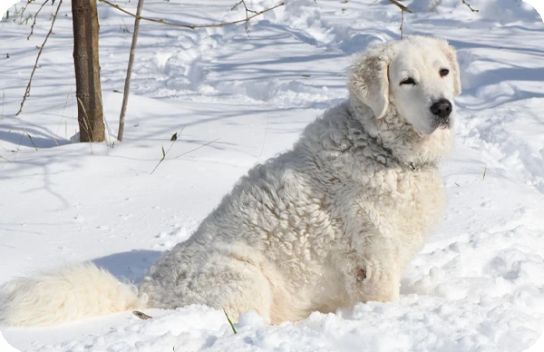

Presentación

El Kuvasz es una raza de perro guardián de gran tamaño, originaria de Hungría, caracterizada por su imponente constitución física y su pelaje doble de color blanco, que puede ser liso o ligeramente ondulado. Posee una estructura fuerte y armoniosa, con una cabeza noble y una mirada inteligente que refleja su naturaleza protectora y su antiguo linaje como perro de la realeza y los pastores.
Personalidad
Los Kuvasz son perros extremadamente leales, valientes y decididos, con un instinto territorial muy desarrollado. Aunque son profundamente afectuosos y protectores con su familia, suelen mostrarse reservados y vigilantes ante la presencia de extraños. Son conocidos por su independencia y su capacidad para tomar decisiones propias, lo que requiere un dueño que ofrezca un liderazgo firme y una socialización constante.
Origen
Es una de las razas húngaras más antiguas, cuyos ancestros llegaron a la cuenca del Danubio con las tribus nómadas magiares. Durante el siglo XV, el rey Matías Corvino popularizó la raza utilizándolos como guardias de corps personales y perros de caza mayor. Históricamente, su principal función ha sido la protección del ganado contra depredadores como lobos y osos en las regiones montañosas.
Salud
El Kuvasz suele tener una esperanza de vida de entre 10 y 12 años. Al ser un perro de gran envergadura, es fundamental vigilar la posible aparición de displasia de cadera y codo, así como el riesgo de torsión gástrica. Se recomienda mantener un crecimiento controlado durante su etapa de cachorro y realizar chequeos veterinarios periódicos para asegurar que sus articulaciones y corazón se mantengan sanos.
Aseo
Su denso pelaje blanco requiere un cepillado regular, al menos una o dos veces por semana, para eliminar el pelo muerto y prevenir enredos, especialmente durante las épocas de muda intensa. No es necesario bañarlos con demasiada frecuencia, ya que su pelo tiene una capacidad natural para repeler la suciedad. Es importante revisar sus orejas caídas, recortar sus uñas y cuidar su higiene dental de forma rutinaria.
Nutrición
Debido a su tamaño y nivel de actividad, el Kuvasz necesita una dieta equilibrada de alta calidad formulada para razas grandes. Es crucial controlar las porciones para evitar el sobrepeso, que podría ejercer presión innecesaria sobre sus articulaciones. Se recomienda dividir su alimentación diaria en dos tomas para reducir riesgos digestivos y asegurar que siempre disponga de agua fresca y limpia.